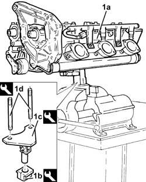
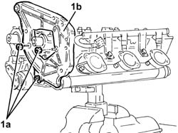
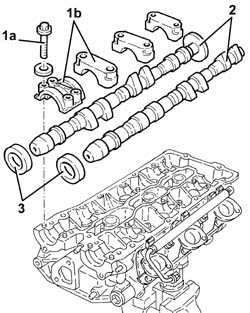
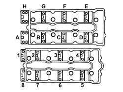
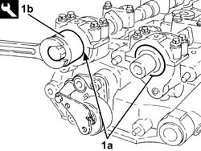
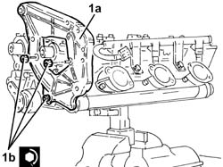

1036E20 TIMING SHAFT OF ONE CYLINDER HEAD, LH OR RH - R R WITH CYLINDER HEAD REMOVED
- Path
- Procedures > 10 ENGINE UNIT > 1036 TIMING SYSTEM > 1036E CAMSHAFTS (2) IN CYLINDER HEADS (2) > 1036E20 TIMING SHAFT OF ONE CYLINDER HEAD, LH OR RH - R R WITH CYLINDER HEAD REMOVED
- Kind
- repair procedure (removal / refitting; the operation number is the code)
- Applies to
- engines: 3.2 V6; all production periods
- Interactive page
- https://sloeber94.github.io/elrnDB-aGt/en/#/125000986
Applies to: engines: 3.2 V6; all production periods
 Removing
Removing
 Refitting
Refitting1. Position the cylinder head (1a) in the vice, using tools (1b), 1 (c) and 1(d).
 | Name | Country |
|---|---|---|
1b | Mount | 1.820.012.000 |
| Name | Country |
|---|---|---|
1c | Mount | 1.820.050.000 |
| Name | Country |
|---|---|---|
1d | - | 1.860.952.000 |

Applies to: engines: 3.2 V6; all production periods
1. Undo the nuts (1a) and remove the bracket on the engine for the reaction rod (1b).

Applies to: engines: 3.2 V6; all production periods
1. Undo the bolts (1a) and remove the camshaft caps (1b).
2. Remove the camshafts.
3. Remove the front camshaft oil seals.

Applies to: engines: 3.2 V6; all production periods
Refitting
RemovingPlace the camshafts back in their housings.
Place the camshaft caps back in their housings in the sequence shown in the diagram.

Applies to: engines: 3.2 V6; all production periods
Tighten the camshaft cap bolts to the specified torque.
 | Fastening | Component | Ø | Value (daNm) |
|---|---|---|---|---|
- | Bolt | CAMSHAFT CAPS/ | M8 | (Cylinder head side) 1.8 ÷ 2.0 |
1. Fit the camshaft front oil seals (1a) using the tool (1b).
| Name | Country |
|---|---|---|
1b | Fitting tool | 1.860.948.000 |

Applies to: engines: 3.2 V6; all production periods
1. Fit the bracket on the engine for the reaction rod (1a) and fix it tightening the nuts (1b) to the recommended torque.
| Fastening | Component | Ø | Value (daNm) |
|---|---|---|---|---|
1b | Nut | REACTION LINK BRACKET ON ENGINE | M10 | (Cylinder head side) 4.5 ÷ 5.5 |

Applies to: engines: 3.2 V6; all production periods
Remove the cylinder head from the supporting tools.